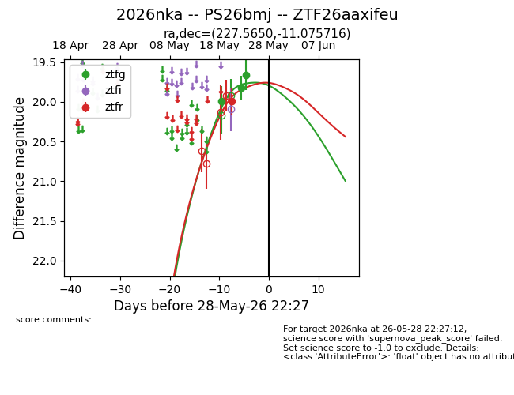
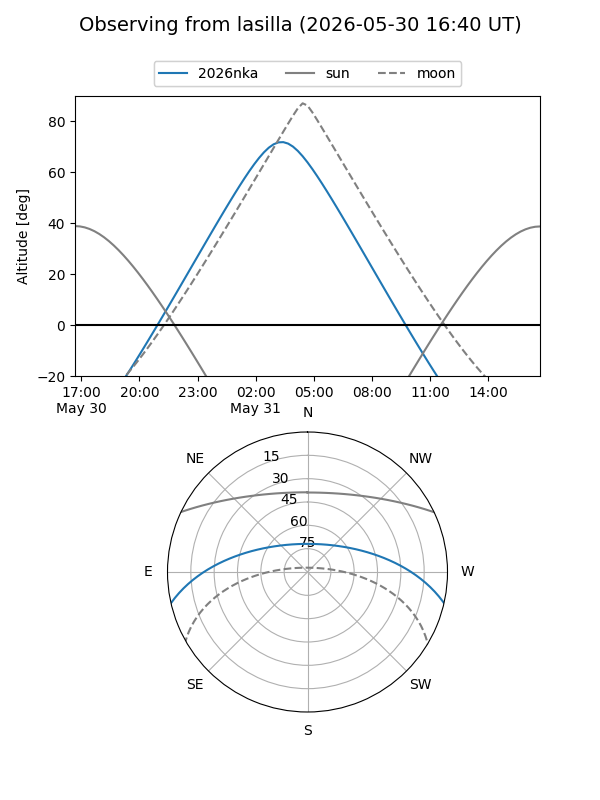
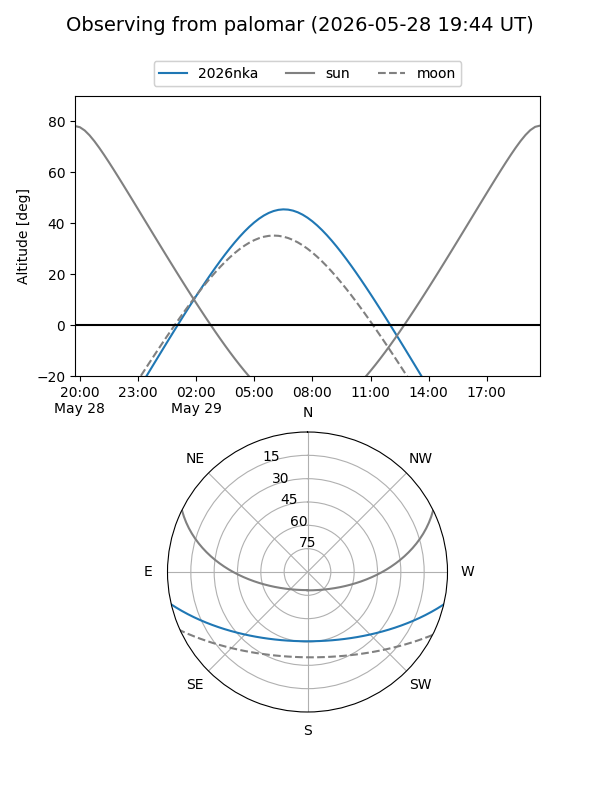
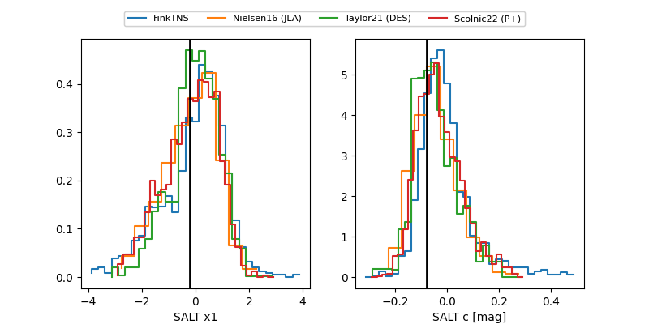

2026nka
Target 2026nka at 2026-05-28 22:28
Aliases and brokers:
lsst-FINK: link
lsst-Lasair: link
lsst-ALeRCE: link
ztf-FINK: link
ztf-Lasair: link
ztf-ALeRCE: link
TNS: link
YSE: link
alt names
ZTF26aaxifeu (ztf,fink_ztf)
2026nka (tns,yse)
PS26bmj (panstarrs)
Coordinates:
equatorial (ra, dec) = 227.5650,-11.07572
equatorial (HMS+DMS) = 15:10:15.60,-11:04:32.58
galactic (l, b) = (348.9708,+39.08147)
Flags:
TNS confirmed: nan
Photometry:
last ztfg=19.66, ztfr=19.99
3 ztfg, 1 ztfr detections
Lightcurve

Visibility


Additional plots
